방송통신산업기사 (2018-10-06 기출문제)
1과목: 디지털 전자회로
1. 다음 중 아래의 변형됭 π형 평활회로에서 맥동률에 대한 설명으로 옳은 것은?
- C1에 비례한다.
- RL에 반비례한다.
- R에 비례한다.
- 입출력전압이득에 반비례한다.
(정답률: 77%)

2. 다음의 L 입력형 평활회로에서 리플을 조절할 수 있는 요소가 아닌 것은? (단, fi는 전원주파수이다.)
- L
- C
- RL
- fi
(정답률: 64%)
3. 다음 그림의 회로에서 궤환비(β)는 어떻게 되는가?
- -RL
- -(Re+RL)
- -(ReRL)
- -Re
(정답률: 68%)
4. 다음 중 연산 증폭기의 특성과 관련이 없는 것은?
- 높은 이득
- 낮은 CMRR
- 높은 입력 임피던스
- 낮은 출력 임피던스
(정답률: 75%)
5. 다음 회로의 명칭은?
- 연산 증폭 적분기
- 연산 증폭 미분기
- 연산 증폭 비교기
- 연산 증폭 발진기
(정답률: 80%)
6. 전력 증폭기의 직류 입력이 60[V], 100[mA]이고, 효율이 90[%]이라면 부하에서의 출력 전력은?
- 1.8[W]
- 3.6[W]
- 5.4[W]
- 7.2[W]
(정답률: 79%)
7. 다음 중 저주파 발진회로로 적합한 것은?
- RC발진기
- 수정발진기
- 콜피츠발진기
- 하틀리발진기
(정답률: 68%)
8. 다음 회로에서 발진기의 출력(Vout) 듀티사이클을 50[%] 미만으로 만들기 위한 조건으로 알맞은 것은?
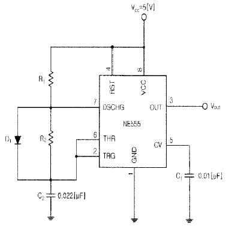
- R1 = R2
- R1 ＞ R2
- R1 ＜ R2
- R1C1 = R2C2
(정답률: 63%)
9. 다음 중 변복조에 대한 설명으로 옳은 것은?
- 반송파의 주파수가 높을수록 안테나의 크기가 커진다.
- 변조 과정의 정보 신호를 반송파, 낮은 주파수를 피변조파라 한다.
- 수신측에서 정보를 갖는 신호를 추출하는 과정을 검파라고 한다.
- 높은 주파수의 신호를 낮은 주파수로 이동시켜 전송하는 과정을 복조라고 한다.
(정답률: 66%)
10. 다음 중 베이스 변조회로에 대한 설명으로 틀린 것은?
- 변조에 필요한 전력이 비교적 적다.
- 출력에 불필요한 고조파가 생길 수 있다.
- 변조회로의 트랜지스터를 C급으로 바이어스 한다.
- 효율이 컬렉터 변조회로보다 적다.
(정답률: 68%)
11. 반송파 전력이 60[kW]인 경우 92[%]로 진폭 변조하였을 때 피변조파 전력은 약 얼마인가?
- 85.4[kW]
- 93.5[kW]
- 122.8[kW]
- 145.2[kW]
(정답률: 49%)
12. 다음 중 AM송신기에서 사용하는 변조기의 종류가 아닌 것은?
- 링변조기
- 암스트롱변조기
- 평행변조기
- 제곱변조기
(정답률: 64%)
13. RC 직렬회로에서 R=500[kΩ], C=2[μF]이다 C의 양단이 출력이고 입력단에 20[V]를 인가하였다. 입력을 인가한 시점부터 출력이 12.64[V]가 되는 시간은?
- 10[msec]
- 20[msec]
- 1[sec]
- 2[sec]
(정답률: 73%)
14. 다음 중 1개의 안정 상태를 가지며, 외부 트리거 펄스에 의해 이 상태에서 벗어 난 후 회로정수에 의해 일정 시간이 경과했을 때 다시 처음의 안정 상태로 되돌아가는 스위칭 펄스 회로는?
- 쌍안정
- 단안정
- 비안정
- 쌍단극성
(정답률: 67%)
15. 그레이코드 1100을 10 진수로 바르게 변환한 것은 다음 중 어느 것인가?
- 6
- 7
- 8
- 9
(정답률: 80%)
16. 다음 중 논리계산식이 틀린 것은?
- A+1=A
- A+A=A
- A·A=A
- A+A·B=A
(정답률: 75%)
17. 다음 그림과 같은 게이트는?
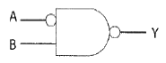


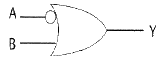

(정답률: 75%)
18. 3×8 디코더의 입력 A, B, C의 값이 110일 때 출력 Y7Y6Y5Y4Y3Y2Y1Y0를 바르게 나타낸 것은?
- 0 1 0 0 0 0 0 0
- 0 0 1 0 0 0 0 0
- 0 1 1 0 0 0 0 0
- 0 1 0 0 0 1 1 0
(정답률: 52%)
19. 다음 2×4 디코더의 진리표에 대한 논리식으로
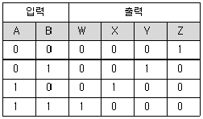
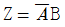
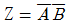
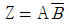
- Z = AB
(정답률: 66%)
20. 응용 논리 회로의 설계에 사용되는 PLA(Programmed Logic Array) 내부는 어떤 논리 소자의 Array로 구성되어 있는가?
- And gate 와 Nand gate array
- Or gate 와 Nor gate array
- Not gate 와 Buffer gate array
- And gate 와 Or gate array
(정답률: 80%)
2과목: 방송통신 기기
21. 다음 중 연주소의 기계설비에 해당하지 않는 것은?
- 송신기
- 텔레비전 주조정실
- 텔레비전 스튜디오
- 스튜디오 부조정실
(정답률: 62%)
22. 다음 중 통신위성을 중계기로 이용하는 TV 뉴스 취재 시스템은?
- ENG
- CG
- SNG
- EPG
(정답률: 77%)
23. 영상프로그램 제작에 기본적으로 사용되는 영상스위쳐에 포함되어 있는 Down Stream Keyer의 역할은?
- 스위쳐 최종단에서 송출되는 영상신호에 문자나 도형을 중첩시키는 기능
- 화면 뒤집기 등 영상 effect를 고려한 기능
- 스위쳐에서 각종 영상소재를 선택할 수 있도록 하는 기능
- 스위쳐에 입력되어 있는 각종 영상소재를 선택하여 사전에 영상소재를 점검할 수 있는 기능
(정답률: 76%)
24. 방송의 전송채널의 특성을 잘못 설명한 것은?
- 왜곡(Distortion)이란 수신신호가 수시로 변동하는 현상이다.
- 간섭은 희망신호와 유사한 형태의 신호이나 원하지 않는 간섭신호가 희망 신호 수신기에 인가되어 주파수 간섭을 일으키는 것을 말한다.
- 잡음이란 시스템의 내외에서 자연적인 원인으로부터 발생하는 불규칙하고 예측할 수 있는 전기적 신호를 말한다.
- 누화는 케이블에 의한 신호 전송시 서로 다른 전송로 상의 신호가 정전 결합, 전자결합 등 전기적 결합에 의하여 다른 회선에 영향을 주는 현상이다.
(정답률: 66%)
25. 다음 중 디지털 변조방식이 아닌 것은?
- 진폭 편이 키잉(ASK)
- 주파수 편이 키잉(FSK)
- 직교 진폭 변조(QAM)
- 진폭 변조(AM)
(정답률: 85%)
26. 100[MHz]의 반송파를 최대 주파수 편이 60[kHz]로 하고 10[kHz]의 신호파 주파수로 FM 변조 하였다. 변조 지수는?
- 4
- 6
- 8
- 10
(정답률: 49%)
27. FM 방식의 성능지수(출력 SNR/입력 SNR)에 대한 다음 설명 중 옳지 않은 것은?
- FM방식 성능지수는 동일한 변조신호 주파수에 대해서 최대 주파수 편이가 클수록 증가한다.
- FM방식 성능지수는 전송 대역폭 내에서 주파수가 높을수록 낮아진다.
- FM방식 성능지수는 변조지수가 0.58 이면 변조도가 100[%]인 AM방식의 성능지수와 거의 같다.
- FM방식 성능지수는 변조지수의 제곱에 반비례한다.
(정답률: 56%)
28. 우리나라의 지상파 HD디지털 TV 방송방식은?
- ATSC(Advanced Television Systems Committee)
- DVB-T(Digital Video Broadcasting-Terrestrial)
- OFDM(Orthogonal Frequency Division Multiplexing)
- BST-OFDM(Band Segmented Transmission-OFDM)
(정답률: 79%)
29. 방송용 아날로그 VTR의 불균일한 회전에 의해 발생하는 컬러 부반송파 주파수의 변화를 제거하여 표준 신호를 만들기 위한 장치는?
- DVE
- FS
- TBC
- CCU
(정답률: 62%)
30. 아날로그 컬러 TV에서 NTSC 방식의 수평선은 525라인으로 구성되어 있다. 수평주사 주파수는?
- 15,750[Hz]
- 12,750[Hz]
- 31.5[kHz]
- 60[Hz]
(정답률: 75%)
31. 특성 임피던스 Z1=50[Ω]의 선로에 부하 저항으로 75[Ω]을 연결한 경우 반사계수(Reflection Coefficient)는 얼마인가?
- 0.2
- 0.4
- 0.5
- 0.6
(정답률: 56%)
32. 다음 중 SNG 전송망에 대한 설명으로 틀린 것은?
- 장소에 별 제약 없이 신속한 통신망 구성이 가능하다.
- 광역성이 있으며 동시전송이 가능하다.
- 전송신호 압축으로 인하여 약간의 전송지연이 발생한다.
- 폭우나 구름이 많은 경우에도 통신장애 없이 안정적인 전송이 가능하다.
(정답률: 72%)
33. 다음 사항 중 위성에 관한 사항으로 틀린 것은?
- 정지 위성통신 시스템은 약 36,000[km] 궤도상에 위치한다.
- 하나의 정지궤도 위성은 지구표면의 약 42.4[%]를 커버한다.
- 소형저궤도 위성은 20[GHz] 이상의 주파수대로 구성 된다.
- 소형저궤도 위성은 메시지전송, 위치정보 서비스등의 비음성 서비스를 주로 한다.
(정답률: 58%)
34. NTSC 영상신호의 레벨을 규정한 수치가 아닌 것은?
- 전체진폭 : 1[Vp_p]
- 영상신호 : 0.714[V]
- 동기신호 : 0.286[V]
- 버스트신호 : 0.572[V]
(정답률: 70%)
35. 위성통신에서 사용되는 다원접속 방식 중 지구국이 증가해도 회선 효율이 양호하고 프레임 내의 특정시간(Time Slot)을 각 지구국에 할당함으로써 지구국 상호간에 혼신 없이 통신이 가능한 방식은?
- TDMA
- SDMA
- FDMA
- CDMA
(정답률: 68%)
36. 다음 중 위성중계기의 텔레메트리, 코멘드, TC&R계의 설명으로 틀린 것은?
- 위성의 발사, 변천 궤도 및 위성의 수명 기간동안 위성체의 모든 운용에 엑세스를 제공
- TC&R계는 코멘드 링크를 이용하여 신호를 송수신
- 코멘드는 위성체 내부 각 부위의 상태데이터를 수집하여 지상 관제소로 전송
- 위성의 운용유지에 결정적인 명령을 송수신하므로 코멘드 시큐리티가 부가됨
(정답률: 53%)
37. 영상신호의 색신호 성분을 복조하여 그 위상과 진폭을 브라운관상에 벡터로 표시하는 것은?
- 마스터 모니터
- 벡터스코프
- 파형 모니터
- 오실로스코프
(정답률: 82%)
38. 다음 중 SD급 디지털 텔레비전에서 휘도신호의 샘플링주파수는?
- 2.25[MHz]
- 5[MHz]
- 6.75[MHz]
- 13.5[MHz]
(정답률: 69%)
39. 다음 중 근접효과(Proximity Effect)에 대한 설명으로 옳은 것은?
- 마이크는 음원에 가까이 할수록 좋다.
- 음원에 가까운 마이크는 고음에 비해 저음이 증가한다.
- 2개 이상의 마이크를 쓸 때는 가까이 놓는 게 좋다.
- 마이크는 음원과의 거리와는 무관하다.
(정답률: 70%)
40. 다음 중 음성신호레벨의 모니터링에 사용되는 VU미터의 특성이 아닌 것은?
- 실제 음량과 가장 근사한 지시치를 제공한다.
- -6VU의 위치는 50[%] 지점과 같다.
- 음악 녹음 등의 경우에 과녹음 방지용으로 적합하다.
- 일종의 전압계이다.
(정답률: 79%)
3과목: 방송미디어 개론
41. 영상신호계에서 색상에 대한 구분은 무엇으로 표시되는가?
- 색신호의 진폭
- 색신호의 위상
- 색신호의 주파수
- 색신호의진폭, 주파수, 위상
(정답률: 71%)
42. 국내 ATSC 디지털방송에서 사용되는 변조방식은?
- 잔류측파대방식
- 상측파대방식
- 하측파대방식
- 양측파대방식
(정답률: 78%)
43. 다음 중 AM과 비교하여 FM 통신방식의 특징이 아닌 것은?
- S/N 비가 좋다.
- 송신기의 효율을 높일 수 있고, 일그러짐이 적다.
- 혼신 방해를 적게 받는다.
- 주파수 대역폭이 AM보다 작다.
(정답률: 69%)
44. TV영상신호 분석에 사용되는 Vector Scope의 기능은?
- 영상신호의 휘도 채도의 크기를 알 수 있는 측정기
- 영상신호를 140 단계로 나누어 표시하는 측정기
- 영상신호의 색상과 채도를 볼 수 있는 측정기
- 동기신호의 크기가 정확한지를 알 수 있는 측정기
(정답률: 73%)
45. NTSC TV 방식에서 TV 화면 하나를 만들기 위해서는 1초에 몇 개의 주사선이 필요한가?
- 525개
- 5,250개
- 10,500개
- 15,750개
(정답률: 71%)
46. 다음 중 WAV에 대한 설명으로 적합하지 않은 것은?
- 다양한 소리를 쉽게 디지털화할 수 있다.
- 컴퓨터와 전자악기 간의 통일규약이다.
- Windows의 각종 효과음이 WAV 형식으로 구성된다.
- 음의 크기가 기록되어 파일의 용량이 커질 수 있다.
(정답률: 74%)
47. 우리나라의 지상파 DMB 전송 시스템의 1개 사업자 블록 대역폭에서 1,536개의 OFDM Sub carrier로 전송을 한다. 이 때 각 Sub carrier의 간격은?
- 1[kHz]
- 1.25[kHz]
- 2[kHz]
- 10[kHz]
(정답률: 49%)
48. 다음 중 평면상의 화상픽셀 정보를 주파수 차원으로 변환하는 기법으로 적절한 것은?
- Subsampling
- DCT
- Delta frame
- Motion estimation
(정답률: 69%)
49. 디지털 TV나 DVD 등에서 대사나 설명을 화면에 자막으로 표시해 주는 기능으로 사용자가 기능을 선택한 경우에만 화면에 나타나는 자막 방식은?
- burned-in caption
- open caption
- closed caption
- hardcoded caption
(정답률: 70%)
50. 뉴미디어 분류체계 중 방송계에 포함되지 않는 매체는?
- AM 스테레오방송
- FM 다중방송
- CATV
- 영상전화
(정답률: 80%)
51. FM 라디오 방송의 음성신호의 변조주파수 상한은?
- 9[kHz]
- 15[kHz]
- 20[kHz]
- 200[kHz]
(정답률: 52%)
52. FM 스테레오 수신기의 특징이 아닌 것은?
- 수신 주파수 대역폭이 넓다.
- 프리엠파시스 회로가 있다.
- 주파수 변별회로가 있다.
- 스켈치 회로가 사용된다.
(정답률: 49%)
53. 다양한 네트워크 및 장치에 있는 모든 멀티미디어 자원을 효율적으로 생성, 전송, 거래할 수 있도록 하기 위한 표준 프레임워크를 제공하는 표준은?
- MPEG-2
- MPEG-4
- MPEG-7
- MPEG-21
(정답률: 70%)
54. 인터넷 시스템에서 송신자가 지정된 몇 개의 수신 호스트에게 데이터를 전송하는 방식은?
- 푸시(Push) 기술
- 스트리밍(Streaming) 기술
- 유니 캐스트(Unicast) 기술
- 멀티 캐스트(Multicast) 기술
(정답률: 67%)
55. 음성방송방식 중에서 반송파성분과 음성신호의 크기를 변조하여 상하의 양측파대를 전송하는 방식은?
- DSB - AM 방식
- SSB - AM 방식
- 모노포닉(Monophonic) 변조방식
- 2채널 스테레오방식
(정답률: 47%)
56. 다음 중 광섬유의 특성으로 볼 수 없는 것은?
- 손실이 적다.
- 대역폭이 좁다.
- 가늘고 가볍다.
- 비전도성이다.
(정답률: 72%)
57. 다음 중 JPEG 압축기법에서 지원하지 않는 알고리즘은?
- 순차적 부호화(Sequential Encoding)
- 점진적 부호화(Progressive Encoding)
- 움직임 추정 부호화(Motion Estimation Encoding)
- 계층적 부호화(Hierarchical Encoding)
(정답률: 73%)
58. 우리나라의 지상파 HD 디지털 TV방송에 사용되는 전송방식은?
- COFDM 방식
- 8-VSB 방식
- BST-OFDM 방식
- CDMA 방식
(정답률: 80%)
59. B-ISDN은 광대역 종합정보통신망으로 기존의 N-ISDN에서 제공된 협대역종합정보서비스와 영상정보등의 광대역 종합정보서비스를 하나의 통신망에서 제공할 수 있는 서비스를 말한다. 다음 중 B-ISDN 설명으로 틀린 것은?
- 신호형태는 디지털망이다.
- 음성, 데이터 영상등의 광대역 신호를 주고 받을 수 있다.
- ATM 교환방식을 적용한다.
- 패킷 프레임단위로 교환한다.
(정답률: 70%)
60. 다음은 이더넷(Ethernet)에 접속되어 있는 IPTV 장치의 프로토콜 구조이다. (가)에 적합한 프로토콜은?
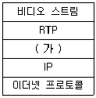
- UDP
- TCP
- MAC
- H.264
(정답률: 76%)
4과목: 전자계산기 일반 및 방송설비기준
61. 프로세서의 제어 장치에 관한 설명으로 틀린 것은?
- 순서논리회로에 의한 고정 배선 방식과 마이크로프로그램 방식이 있다.
- 마이크로프로그램 방식이 고정 배선 방식보다 속도가 빠르다.
- 고정 배선 방식은 부품의 수는 최대화 된다.
- 마이크로프로그램 방식에서는 제어 메모리가 필요하다.
(정답률: 44%)
62. 다음 중 CPU의 상태를 나타내는 플래그(Flag)가 아닌 것은?
- 패리티(Parity) 플래그
- 사인(Sign) 플래그
- 트랩(Trap) 플래그
- 제로(Zero) 플래그
(정답률: 53%)
63. 10진수 20에 대해 2진법, 8진법 및 16진법의 표현으로 옳은 것은?
- 10010, 23, 13
- 10010, 24, 14
- 10100, 23, 13
- 10100, 24, 14
(정답률: 71%)
64. 다음 문장의 빈칸에 들어갈 용어로 적합한 것은?
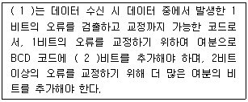
- (1) : 3초과 코드, (2) : 2
- (1) : 그레이 코드, (2) : 3
- (1) : 해밍 코드, (2) : 3
- (1) : 패리티 체크 코드, (2) : 2
(정답률: 62%)
65. 커널을 메모리에 로드하여 실행하는 대신 플래시에서 직접 수행하고 임베디드 시스템의 제한된 메모리 자원을 극복하기 위한 기술을 무엇이라 하는가?
- 부팅지원 기술
- XIP(eXecution-In-Place) 기술
- 저전력 지원 기술
- 자원관리 기술
(정답률: 71%)
66. 다음 페이지 관리 기법 중 각 페이지 프레임에 카운터를 두어 참조된 횟수를 유지시켜 가장 적은 수를 가진 페이지 프레임을 교체하는 방법은?
- LFU 알고리즘
- 2차 기회 알고리즘
- LRU 알고리즘
- FIFO 알고리즘
(정답률: 63%)
67. 다음 응용 소프트웨어 중 성격이 다른 소프트웨어는?
- WINZIP
- WINARJ
- ALZIP
- WF_FTP
(정답률: 59%)
68. 다음 중 컴퓨터가 중간 변환 과정 없이 직접 이해할 수 있는 언어는 무엇인가?
- 기계어
- 어셈블리어
- ALGOL
- PL/1
(정답률: 69%)
69. 다음 중 기억공간의 효율화를 위해 단편화된 가용공간을 모아 하나의 큰 가용공간으로 만들어 메모리를 반납하는 것은?
- Address Mapping
- Virtual Address Space
- Garbage Collection
- Time Slice
(정답률: 70%)
70. 논리식
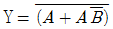
를 간략화하면?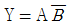
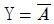
- Y = 1
- Y = AB
(정답률: 76%)
71. 방송법 제8조에 따른 주식 또는 지분의 소유제한에 포함되는 특수관계자(본인이 개인일 경우에 한한다)의 범위에 해당되지 않는 것은?
- 배우자(사실상의 혼인관계에 있는 자를 포함한다)
- 6촌 이내의 혈족
- 4촌 이내의 인척
- 본인이 단독으로 100분의 30이하를 출자한 법인
(정답률: 76%)
72. 방송채널사용사업자가 승인유효기간 만료 후 계속 방송을 행하고자 하는 때 어떤 절차를 받아야 하는가?
- 과학기술정보통신부장관 또는 방송통신위원회의 재허가
- 과학기술정보통신부장관 또는 방송통신위원회의 재등록
- 과학기술정보통신부장관 또는 방송통신위원회의 재허가 추천
- 과학기술정보통신부장관 또는 방송통신위원회의 재승인
(정답률: 79%)
73. 다음 중 방송법상 방송의 공정성과 공익성에 대한 내용이 아닌 것은?
- 방송에 의한 보도는 공정하고 객관적이어야 한다.
- 방송은 타인의 명예를 훼손하여서는 안 된다.
- 방송은 국민의 윤리적, 정서적 감정을 존중하여야 한다.
- 방송은 국민의 알권리와 표현의 자유를 보호, 신장하여야 한다.
(정답률: 57%)
74. 다음 중 방송분쟁조정위원회의 심의사항이라고 볼 수 없는 것은?
- 방송프로그램의 공급 및 수급과 관련된 분쟁 조정
- 방송구역과 관련된 분쟁 조정
- 중계방송권 등 재산권적 이해와 관련된 분쟁 조정
- 방송사업자의 개별협찬고지에 관련된 분쟁 조정
(정답률: 64%)
75. 다음 중 방송편성의 자유와 독립의 내용으로 가장 옳은 것은?
- 누구든지 방송편성에 관하여 방송법 또는 다른 법률에 의하여 규제나 간섭이 가능하다.
- 방송사업자는 방송편성 책임자를 선임하고, 그 성명을 방송시간 내에 매일 2회 이상 공표하여야 한다.
- 방송편성의 자유와 독립은 보장 된다.
- 방송은 민주적 기본 질서를 존중하여야 한다.
(정답률: 71%)
76. 다음 중 방송통신심의위원회의 심의규정에 포함되어야 할 사항이 아닌 것은?
- 민족문화의 창달과 민족의 주체성 함양에 관한 사항
- 건전한 여가생활의 보호와 방송심의활동에 관한 사항
- 헌법의 민주적 기본질서의 유지와 인권존중에 관한 사항
- 보도·논평의 공정성·공공성에 관한 사항
(정답률: 48%)
77. 음악유선방송사업자가 사용할 수 있는 주파수대역의 채널간격은?
- 100[kHz]
- 200[kHz]
- 300[kHz]
- 400[kHz]
(정답률: 74%)
78. 다음 중 중파(AM)방송용 무선설비의 기술기준에서 변조도 및 변조방식에 대한 설명으로 틀린 것은?
- 모노포닉방송을 행하는 송신장치 등은 적어도 90[%]까지 직선적으로 변조할 수 있을 것
- 스테레오포닉방송을 행하는 송신장치 등은 동일한 좌측신호와 우측신호를 합한 신호에 따라 적어도 95[%]까지 직선적으로 변조할 수 있을 것
- 모노포닉 방송을 위한 변조는 진폭변조방식으로 할 것
- 스테레오포닉방송을 위한 변조는 직교진폭변조방식으로 할 것
(정답률: 54%)
79. 공동주택에 설치하는 설비에 해당되는 것은?
- 중파라디오방송 공동수신안테나
- 에프엠(FM)라디오방송 공동수신안테나
- 종합유선방송의 구내전송선로설비
- 라디오유선방송 공동수신설비
(정답률: 56%)
80. 방송 공동수신 안테나 시설에서 증폭기에 요구되는 기준이 아닌 것은?
- 텔레비전방송신호를 균일하게 증폭할 수 있을 것
- 공급되는 전원을 수동으로 연결 또는 차단할 수 있을 것
- 수동으로 출력신호의 세기를 조정할 수 있을 것
- 주파수를 임의로 변환시킬 수 있을 것
(정답률: 66%)